Soru 1Cevap: B
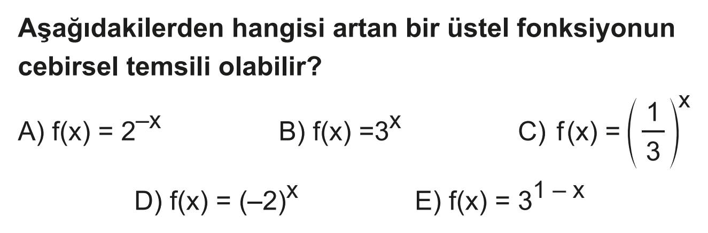
Çözüm
- $2^{-x}=\left(\tfrac12\right)^x$ ve $\left(\tfrac13\right)^x$ azalandır; $3^{1-x}$ de azalandır.
- $(-2)^x$ üstel fonksiyon değildir (taban negatif).
- $3^x$: taban $3\gt1$, artan (B).
Cevap: B
Soru 2Cevap: E
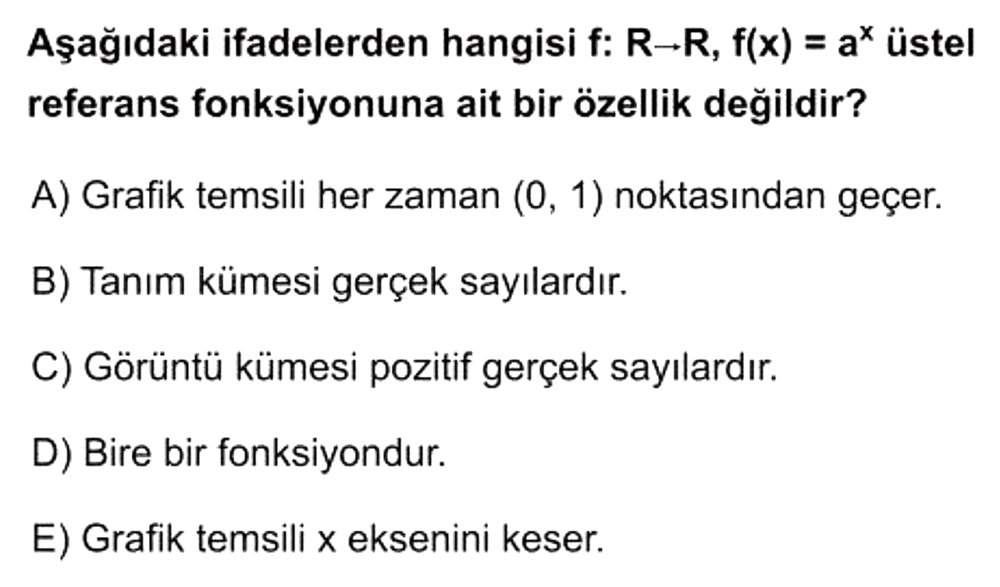
Çözüm
- $a^0=1$: grafik $(0,1)$'den geçer; tanım $\mathbb R$, görüntü $\mathbb R^+$.
- Üstel fonksiyon bire birdir.
- $a^x\gt0$ olduğundan $x$ eksenini kesmez; E bir özellik değildir.
Cevap: E
Soru 3Cevap: B
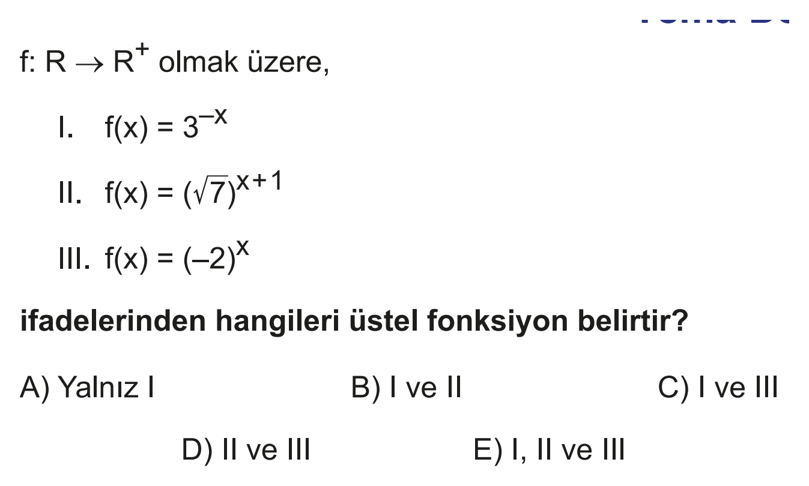
Çözüm
- $3^{-x}=\left(\tfrac13\right)^x$: üstel.
- $(\sqrt7)^{x+1}=\sqrt7\cdot(\sqrt7)^x$: üstel.
- $(-2)^x$: taban negatif, değil. I ve II (B).
Cevap: B
Soru 4Cevap: C
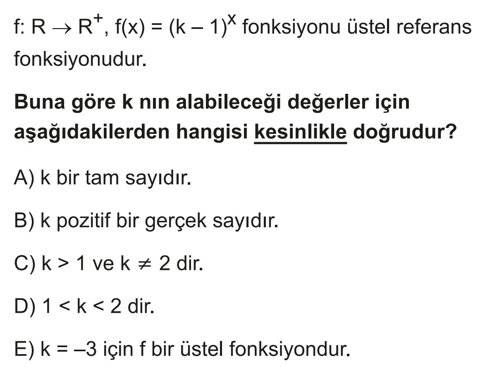
Çözüm
- $k-1\gt0\Rightarrow k\gt1$.
- $k-1\ne1\Rightarrow k\ne2$.
- $k\gt1$ ve $k\ne2$ (C).
Cevap: C
Soru 5Cevap: E
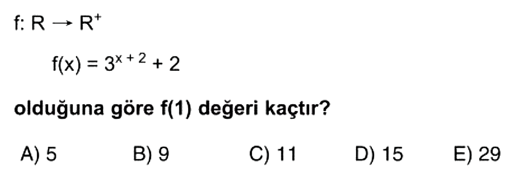
Çözüm
- $f(1)=3^{1+2}+2$.
- $=27+2$.
- $=29$ (E).
Cevap: E
Soru 6Cevap: D
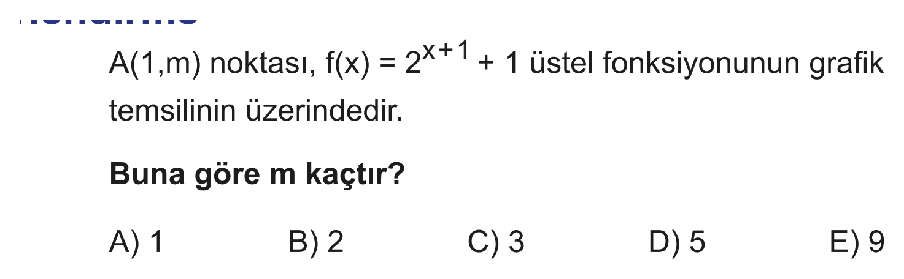
Çözüm
- $m=f(1)=2^{1+1}+1$.
- $=4+1$.
- $m=5$ (D).
Cevap: D
Soru 7Cevap: D
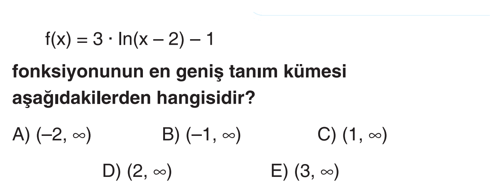
Çözüm
- $\ln(x-2)$ için $x-2\gt0$.
- $x\gt2$.
- $3\ln(x-2)-1$'in tanım kümesi $(2,\infty)$ (D).
Cevap: D
Soru 8Cevap: C
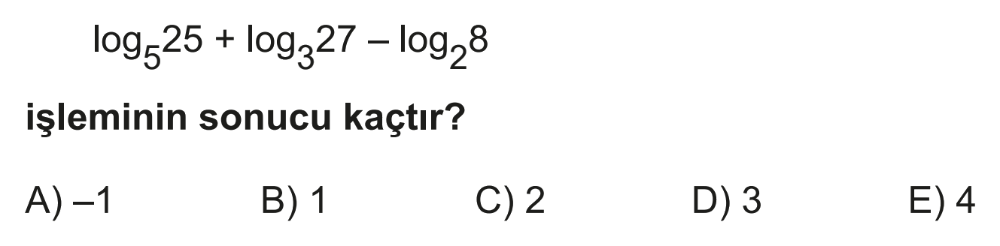
Çözüm
- $\log_525=2$, $\log_327=3$.
- $\log_28=3$.
- $2+3-3=2$ (C).
Cevap: C
Soru 9Cevap: E
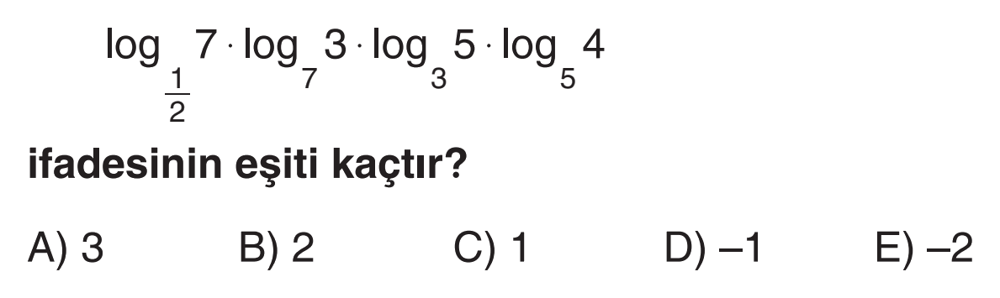
Çözüm
- $\log_ab\cdot\log_bc=\log_ac$ zinciri uygulanır.
- $\log_{1/2}7\cdot\log_73\cdot\log_35\cdot\log_54=\log_{1/2}4$.
- $\left(\tfrac12\right)^{-2}=4\Rightarrow-2$ (E).
Cevap: E
Soru 10Cevap: C
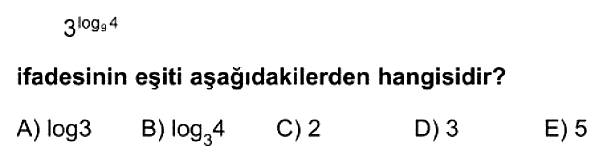
Çözüm
- $\log_94=\log_32$.
- $3^{\log_32}$.
- $=2$ (C).
Cevap: C
Soru 11Cevap: E
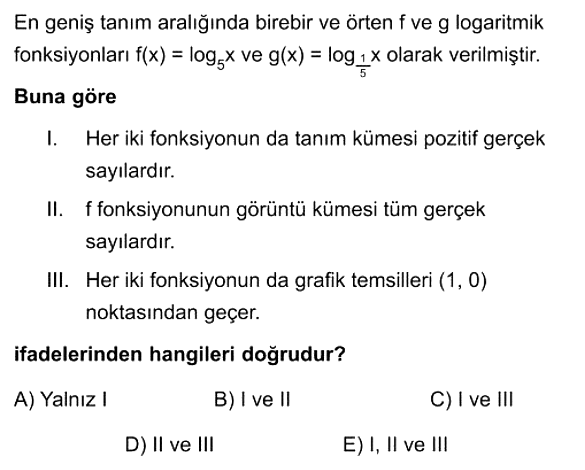
Çözüm
- İkisinin de tanım kümesi $(0,\infty)$ (I).
- Logaritmik fonksiyonun görüntüsü $\mathbb R$ (II).
- $\log_51=\log_{1/5}1=0$: ikisi de $(1,0)$'dan geçer (III). Cevap E.
Cevap: E
Soru 12Cevap: D
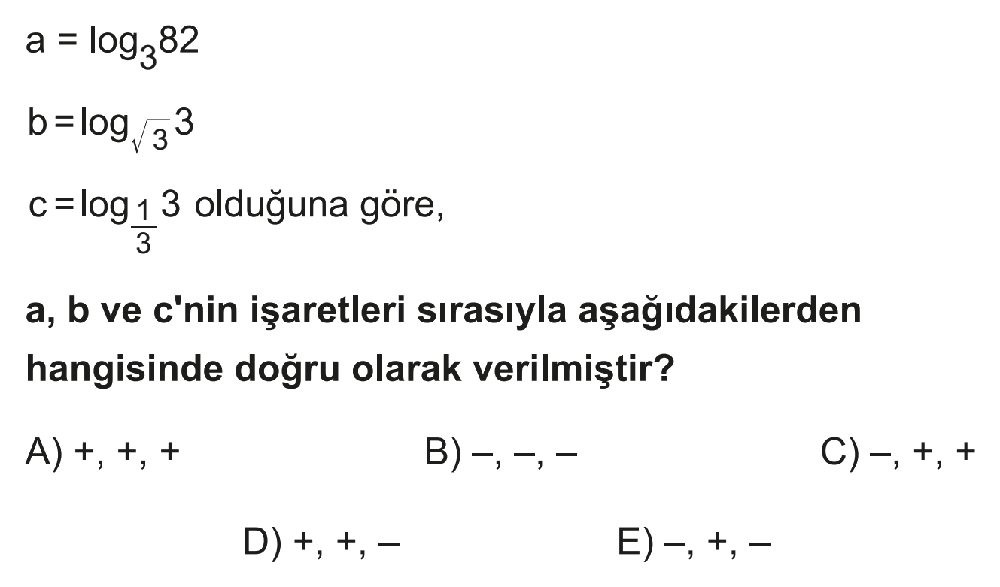
Çözüm
- $a=\log_382$: $82\gt1$, taban $\gt1$ ⇒ $+$.
- $b=\log_{\sqrt3}3=2$ ⇒ $+$.
- $c=\log_{1/3}3=-1$ ⇒ $-$. $+,+,-$ (D).
Cevap: D
Soru 13Cevap: E
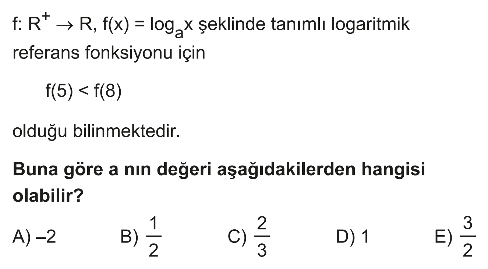
Çözüm
- $5\lt8$ ve $f(5)\lt f(8)$: $f$ artan.
- $\log_ax$ artan $\iff a\gt1$.
- Seçeneklerden $\tfrac32$ (E).
Cevap: E
Soru 14Cevap: D
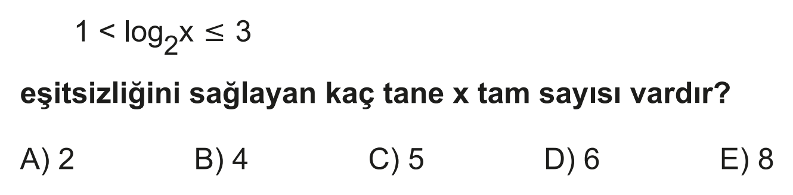
Çözüm
- $1\lt\log_2x\le3\Rightarrow2\lt x\le8$.
- Tam sayılar $3,\dots,8$.
- $6$ tane (D).
Cevap: D
Soru 15Cevap: D
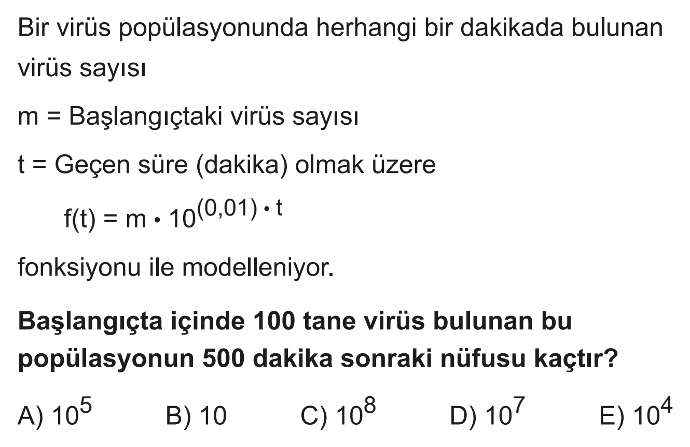
Çözüm
- $f(500)=100\cdot10^{0{,}01\cdot500}$.
- $=10^2\cdot10^5$.
- $=10^7$ (D).
Cevap: D
Soru 16Cevap: C
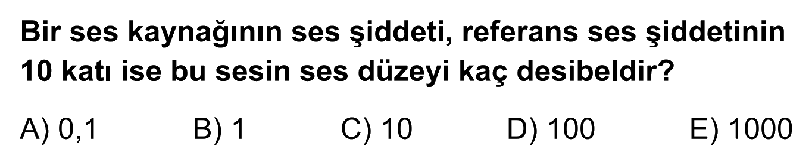
Çözüm
- $\dfrac I{I_0}=10$.
- $L=10\log10$.
- $=10$ dB (C).
Cevap: C
Soru 17Cevap: E
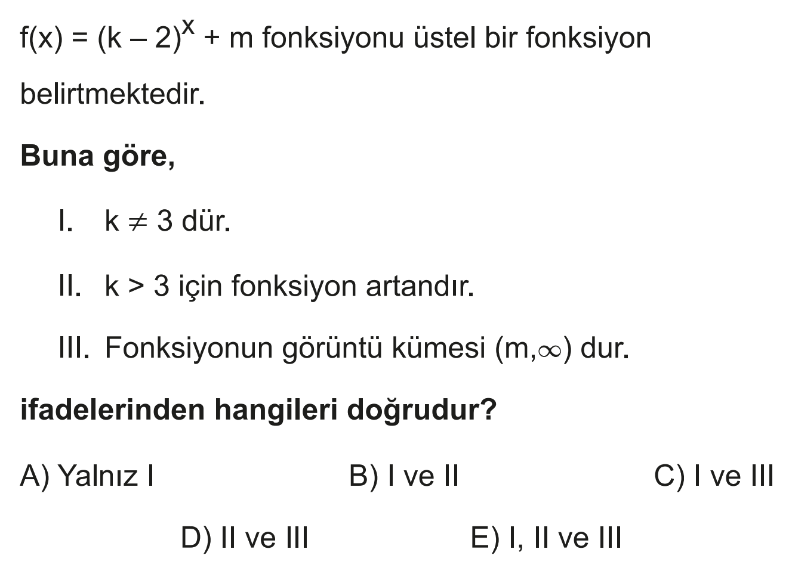
Çözüm
- Taban $k-2\ne1\Rightarrow k\ne3$ (I).
- $k\gt3\Rightarrow k-2\gt1$: artan (II).
- $(k-2)^x\gt0$: görüntü $(m,\infty)$ (III). I, II ve III (E).
Cevap: E
Soru 18Cevap: B
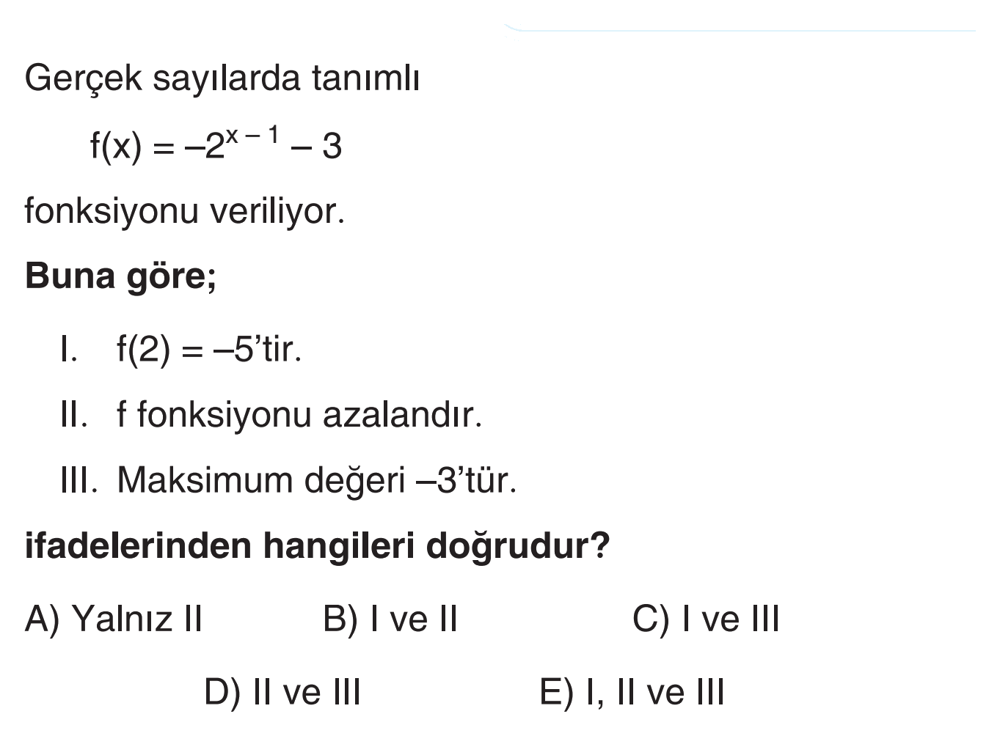
Çözüm
- $f(2)=-2^{1}-3=-5$ (I doğru).
- $2^{x-1}$ artan; başına eksi gelince $-2^{x-1}$ azalan (II doğru).
- $-2^{x-1}\lt0\Rightarrow f(x)\lt-3$; $-3$ değeri alınmaz, maksimum yok (III yanlış). I ve II (B).
Cevap: B
Soru 19Cevap: C
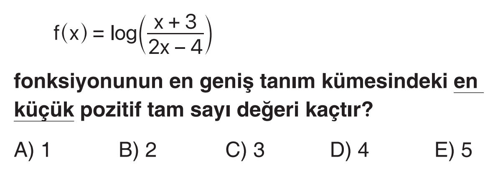
Çözüm
- $\dfrac{x+3}{2x-4}\gt0$: kritik noktalar $-3$ ve $2$.
- İşaret tablosu: $x\lt-3$ veya $x\gt2$.
- En küçük pozitif tam sayı $3$ (C).
Cevap: C
Soru 20Cevap: C
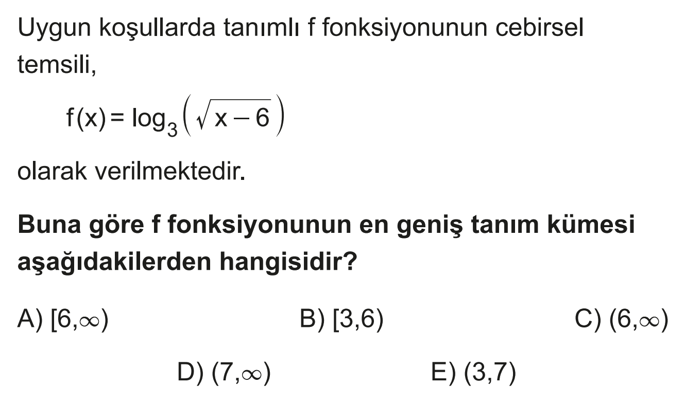
Çözüm
- Kök tanımlı: $x\ge6$.
- Logaritma tanımlı: $\sqrt{x-6}\gt0\Rightarrow x\gt6$.
- $(6,\infty)$ (C).
Cevap: C
Soru 21Cevap: D
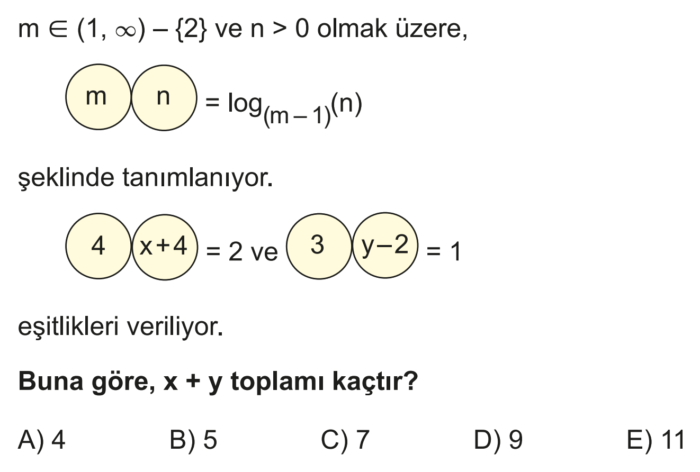
Çözüm
- $\log_3(x+4)=2\Rightarrow x=5$.
- $\log_2(y-2)=1\Rightarrow y=4$.
- $x+y=9$ (D).
Cevap: D
Soru 22Cevap: C
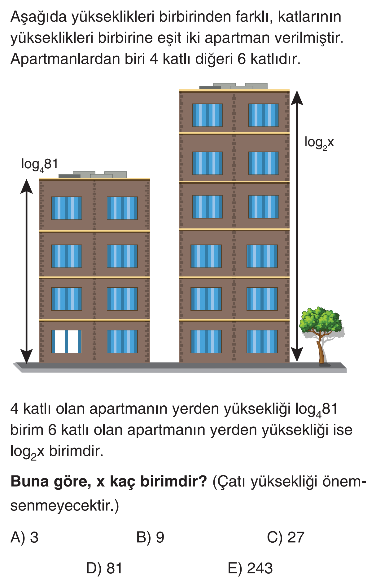
Çözüm
- Kat yükseklikleri eşit: $\dfrac{\log_481}{4}=\dfrac{\log_2x}{6}$.
- $\log_481=\log_29=2\log_23\Rightarrow\log_2x=\tfrac64\cdot2\log_23=3\log_23$.
- $\log_2x=\log_227\Rightarrow x=27$ (C).
Cevap: C
Soru 23Cevap: B
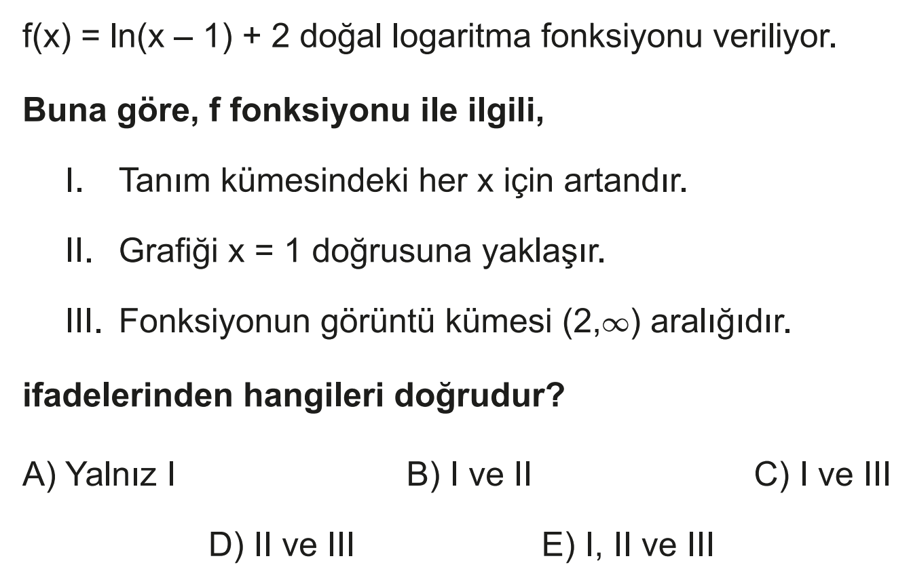
Çözüm
- $\ln$ artan: $f$ artan (I doğru).
- Dikey asimptot $x=1$ (II doğru).
- Görüntü kümesi $\mathbb R$'dir (III yanlış). I ve II (B).
Cevap: B
Soru 24Cevap: D
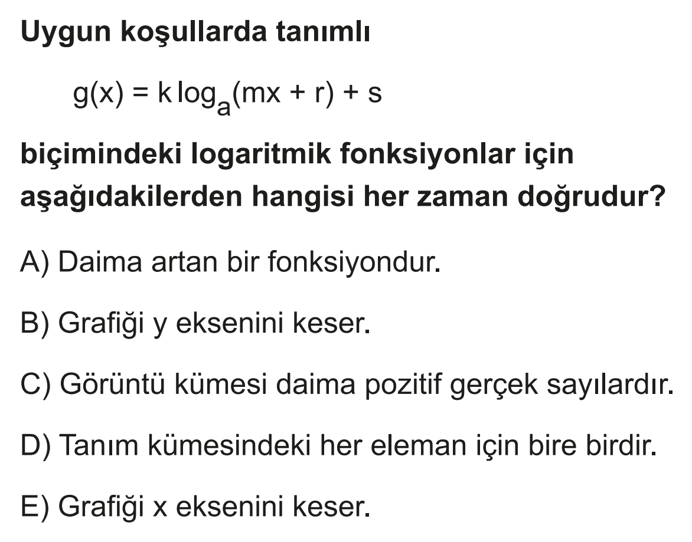
Çözüm
- $k$ ve $a$'ya göre fonksiyon artan da azalan da olabilir (A yanlış); $y$ eksenini kesmeyebilir (B yanlış).
- Görüntü kümesi her zaman $\mathbb R$ (C yanlış); $x$ eksenini her zaman keser ama E değil, D sorulur.
- $k\ne0$, $m\ne0$ iken fonksiyon tanım kümesinde bire birdir (D).
Cevap: D
Soru 25Cevap: D
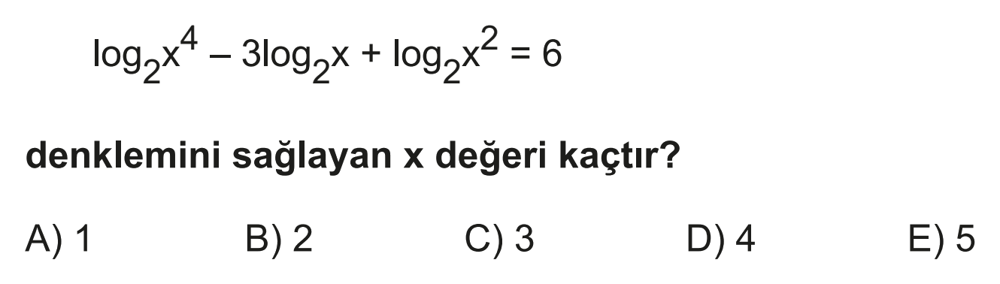
Çözüm
- $\log_2x^4=4\log_2x$, $\log_2x^2=2\log_2x$.
- $4t-3t+2t=3t=6\Rightarrow t=2$.
- $x=4$ (D).
Cevap: D
Soru 26Cevap: C
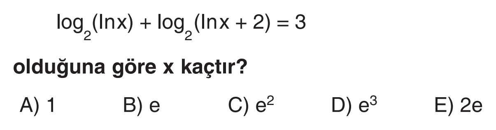
Çözüm
- $\log_2[\ln x(\ln x+2)]=3\Rightarrow t(t+2)=8$ ($t=\ln x\gt0$).
- $t^2+2t-8=0\Rightarrow t=2$.
- $\ln x=2\Rightarrow x=e^2$ (C).
Cevap: C
Soru 27Cevap: C
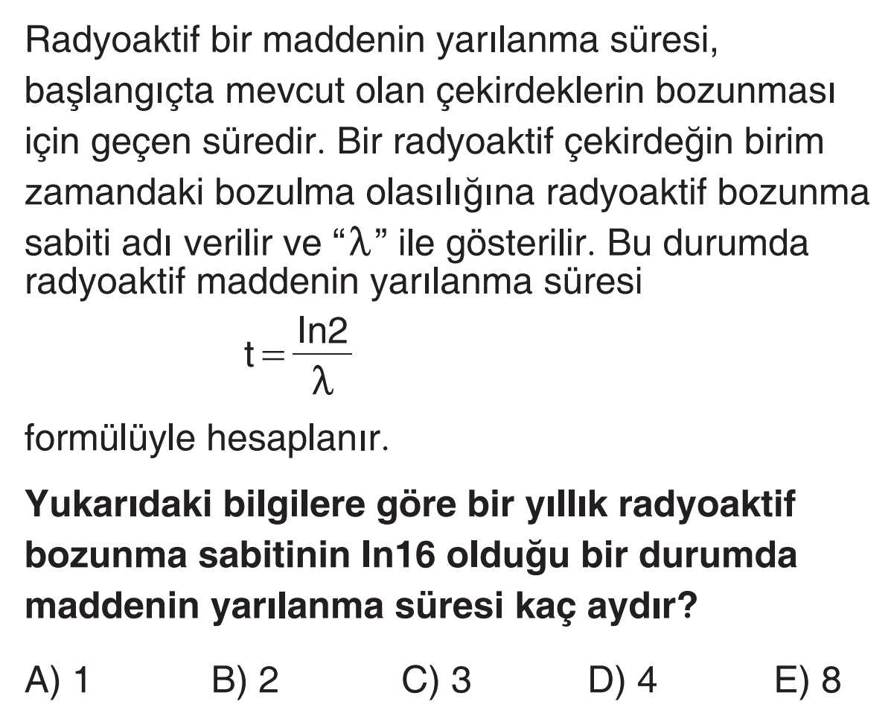
Çözüm
- $t=\dfrac{\ln2}{\lambda}$, $\lambda=\ln16=4\ln2$.
- $t=\dfrac{\ln2}{4\ln2}=\tfrac14$ yıl.
- $\tfrac14$ yıl $=3$ ay (C).
Cevap: C
Soru 28Cevap: C
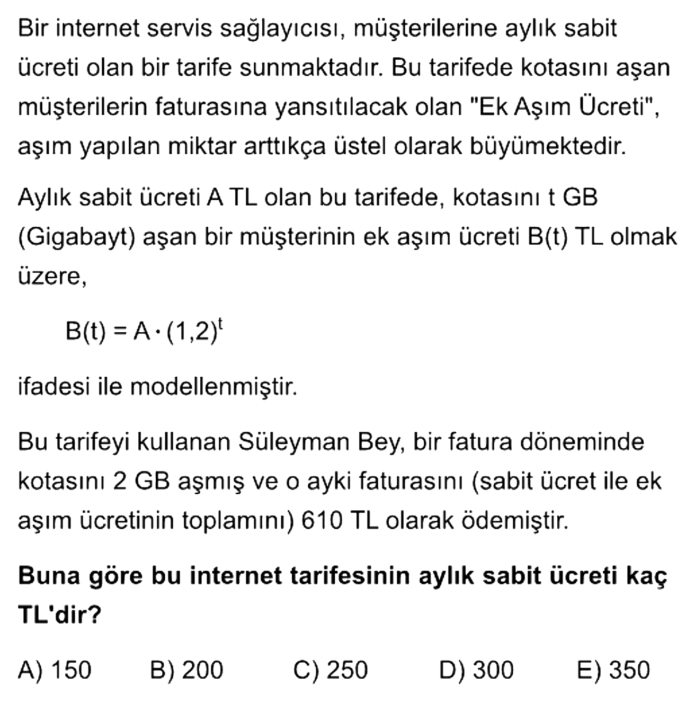
Çözüm
- $B(2)=A\cdot(1{,}2)^2=1{,}44A$.
- $A+1{,}44A=610\Rightarrow2{,}44A=610$.
- $A=250$ TL (C).
Cevap: C
Soru 29Cevap: D
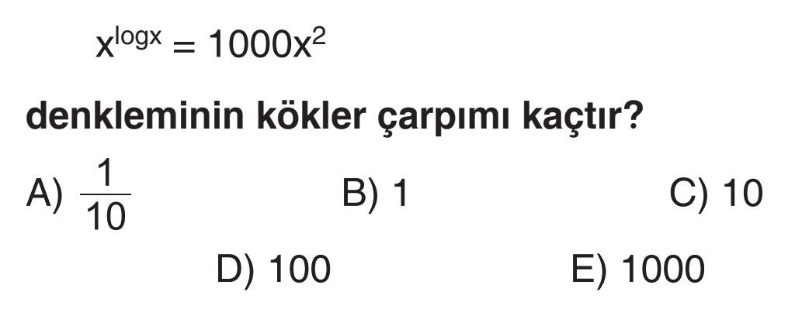
Çözüm
- İki tarafın onluk logaritması: $(\log x)^2=3+2\log x$.
- $t^2-2t-3=0\Rightarrow t=3$ veya $t=-1$.
- $x=1000$ veya $\tfrac1{10}$; çarpım $100$ (D).
Cevap: D
Soru 30Cevap: C
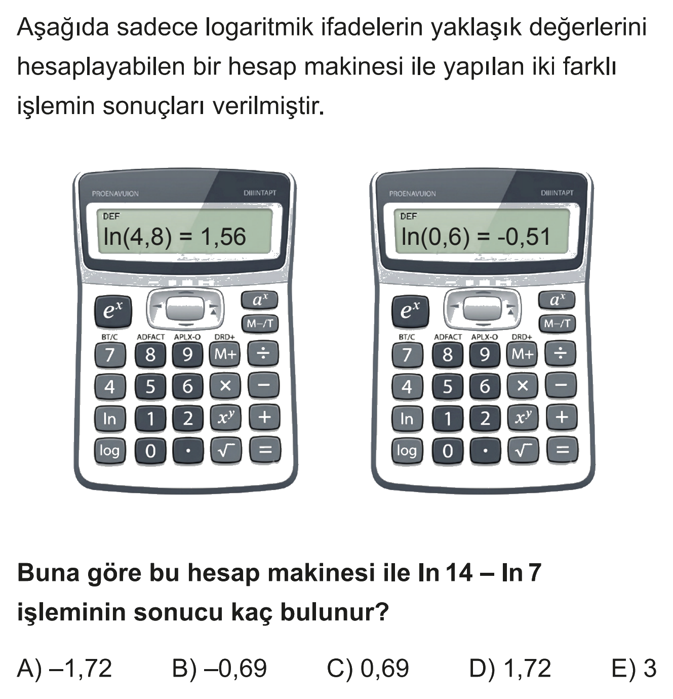
Çözüm
- $\ln14-\ln7=\ln2$.
- $\ln4{,}8-\ln0{,}6=\ln8=3\ln2=1{,}56+0{,}51=2{,}07$.
- $\ln2=0{,}69$ (C).
Cevap: C